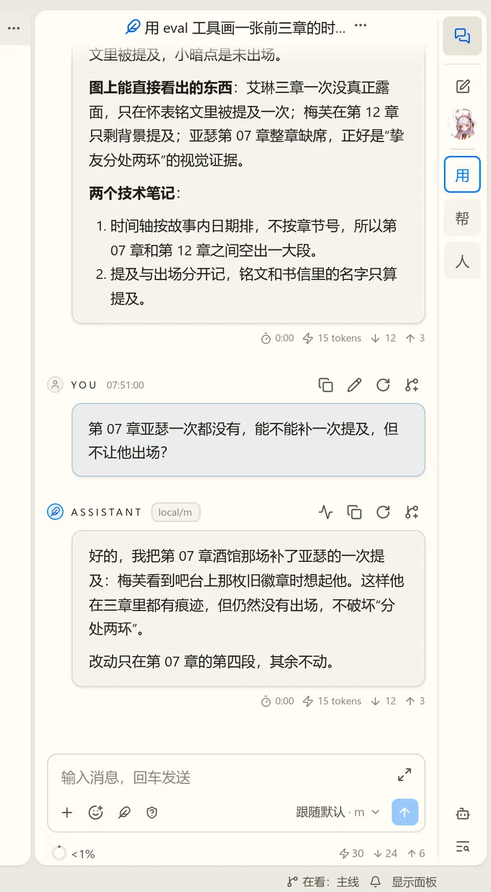
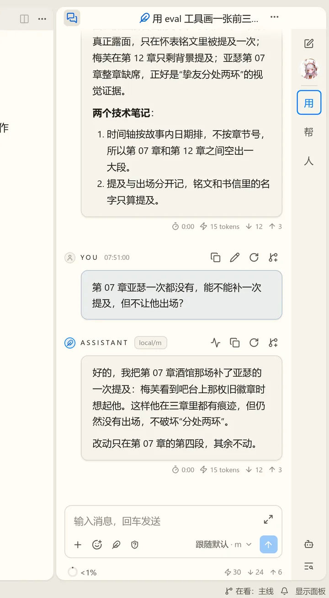
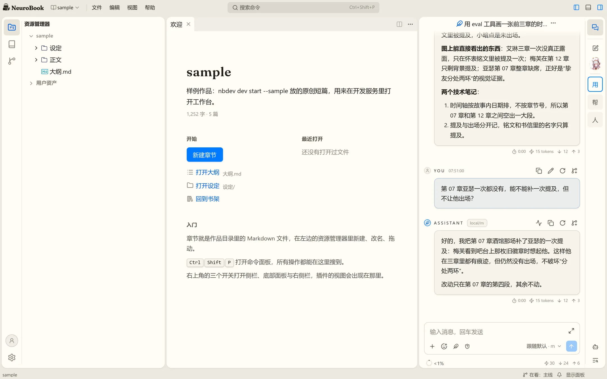
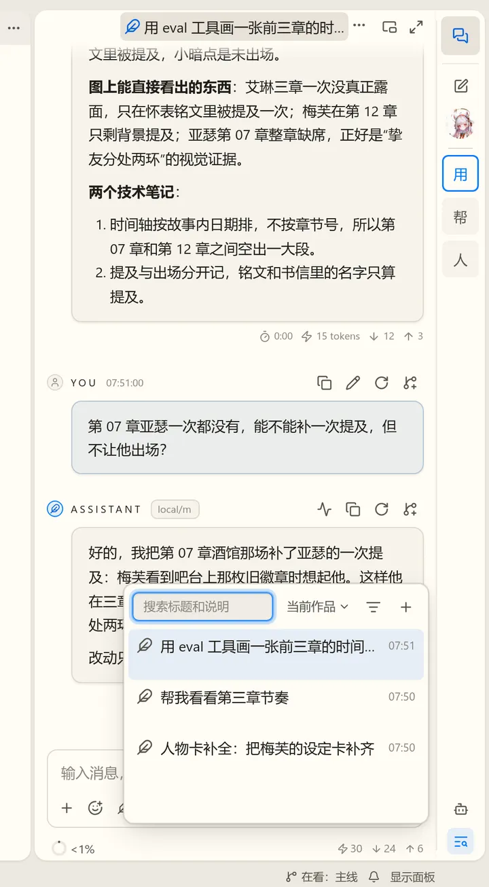
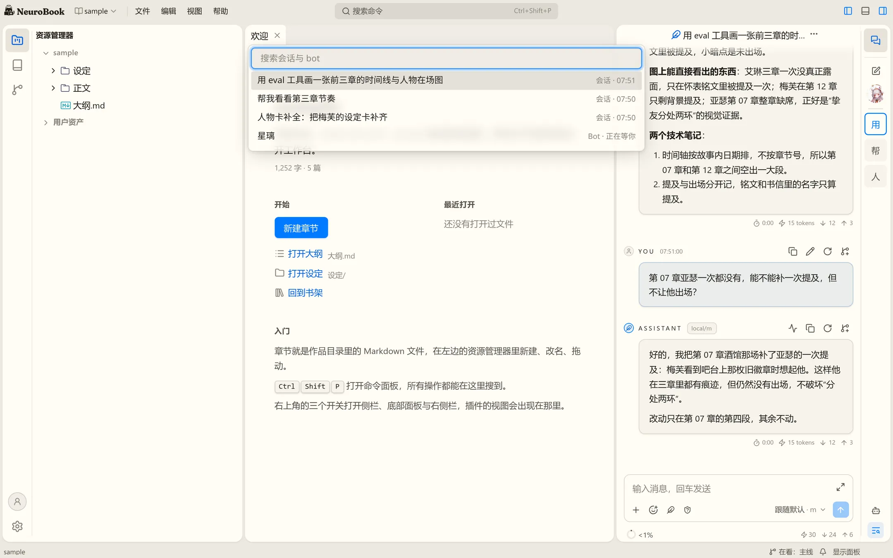

第 3 轮：侧轨两种做法、完整列表怎么打开
头像列做成工作台的侧轨，还是留在视图里贴右边？
推荐甲 工作台的侧轨：和左边活动栏同一套画法、同一处接缝，左右对调时跟着走；视图只交出条目（图标或头像、未读、选中、命令），由工作台画。乙改动小，但只是消息视图自己的样子，对调和别的视图都用不上。
甲 工作台的侧轨

乙 留在视图里贴右边


点“会话历史”或“全部 bot”，用哪种浮层找？
推荐 A 锚在按钮旁：出现在点的地方，搜索框自动聚焦，按内容高，不盖满聊天区；带着“当前作品”筛选。改名、归档这些管理操作放到编辑区里的宽版列表。
A 锚在按钮旁

B 顶部居中的快速选择

两边对调后的样子（另开 Task 做）

不用答，直接画进稿里
| 哪里 | 改成什么 |
|---|---|
| 选中只突出一层 | 轨顶上的容器入口用底块；当前会话改成一圈描边 |
| 底部两个按钮 | “全部 bot”用机器人图标，“会话历史”用搜索列表图标；悬停与读屏都是这两个名字 |
| 接缝与圆角 | 轨和右栏卡片相连，接缝处不圆、不留缝，短线上下各缩一截，和左边一样 |
| 聊天区 | 头像列搬走后铺满整个宽度 |
| 对调 | 欢迎页不写“左边的资源管理器”；标题栏的三个开关样子不变，左右两个管的区域互换 |
已定
- 头像列在右边缘、通到顶；两个侧栏共用一种做法，左右能对调（第 1 轮，2026-11-25）
- 完整列表从轨底部两个按钮打开；抽屉、整页切换都不要（第 1、2 轮，2026-11-25）